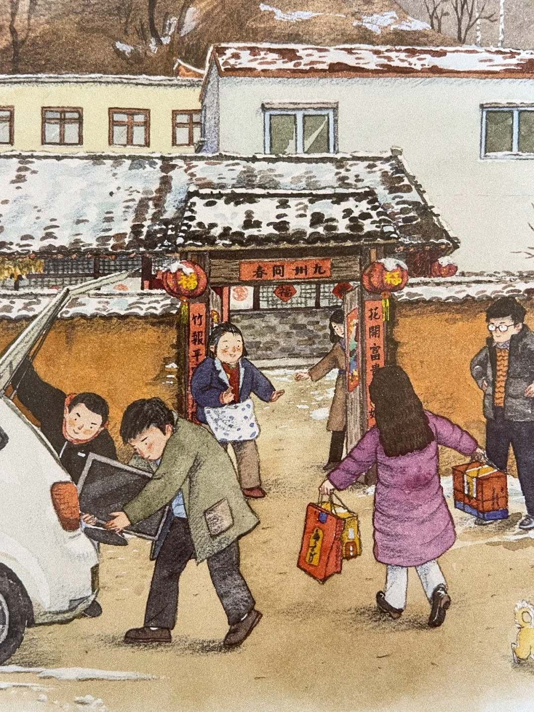
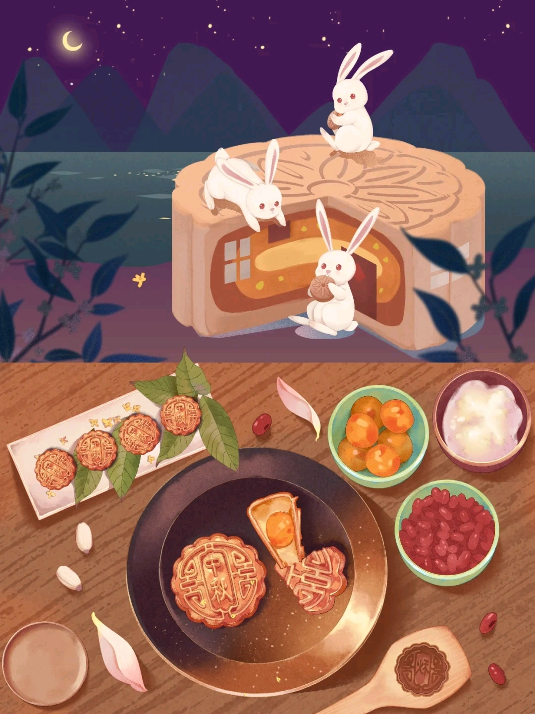
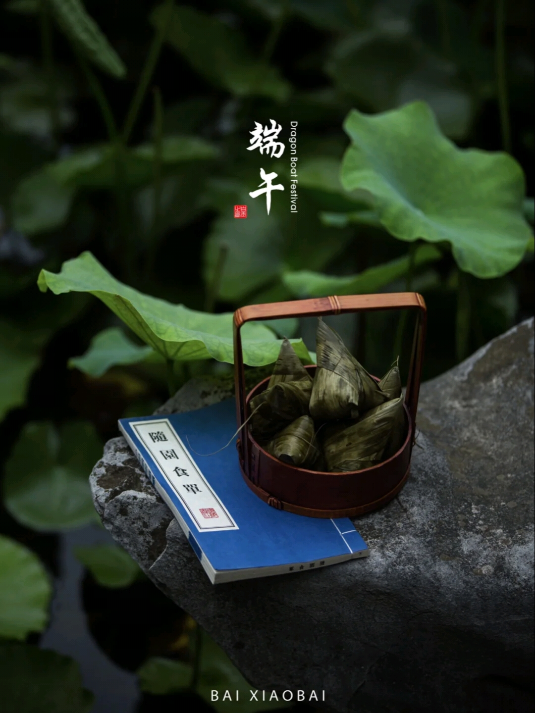

传统节日

春节
农历正月初一
饺子，年夜饭，对联
岁首祁年祭祀
春节
春节（Spring Festival），即中国农历新年，俗称新春、新岁、岁旦等，口头上又称过年、过大年。
春节历史悠久，由上古时代岁首祈岁祭祀演变而来。万物本乎天、人本乎祖，祈岁祭祀、敬天法祖，报本反始也。
春节的起源蕴含着深邃的文化内涵，在传承发展中承载了丰厚的历史文化底蕴。在春节期间，全国各地均有举行各种庆贺新春活动，带有浓郁的各地地方特色。
这些活动以除旧布新、驱邪攘灾、拜神祭祖、纳福祈年为主要内容，形式丰富多彩，凝聚着中华传统文化精华。
习俗
在春节期间，全国各地均有举行各种贺岁活动，各地因地域文化不同而又存在着习俗内容或细节上的差异，带有浓郁的各地域特色。
春节期间的庆祝活动极为丰富多样，有舞狮、飘色、舞龙、游神、庙会、逛花街、赏花灯、游锣鼓、游标旗、烧烟花、祈福、掼春，也有踩高跷、跑旱船、扭秧歌等等。
春节期间贴年红、守岁、吃团年饭、拜年等各地皆有之，但因风土人情的不同，细微处又各有其特色。春节民俗形式多样、内容丰富，是中华民族的生活文化精粹的集中展示。
春节是除旧布新的日子，春节虽定在农历正月初一，但春节的活动却并不止于正月初一这天。从年尾小年起，人们便开始“忙年”：祭灶、扫尘、购置年货、贴年红、洗头沐浴、张灯结彩等等，

中秋节
农历八月十五
月饼、花灯
中秋节
中秋节的起源和月亮密不可分，中秋节是上古天象崇拜——敬月习俗的遗痕。
在传统文化中，月亮和太阳一样，这两个交替出现的天体成了先民崇拜的对象。
在二十四节气“秋分”时节，是古老的“祭月节”，中秋节则是由传统的“秋分祭月”而来。
据考证，最初“祭月节”是定在干支历二十四节气“秋分”这天，不过由于在历史发展中历法融合，使用阴历（夏历），
后来将“祭月节”由二十四节气“秋分”调至夏历八月十五日。中秋节是秋季时令习俗的综合，其所包含的节俗因素，大都有古老的渊源。
习俗
中秋节自古便有祭月、赏月、吃月饼、看花灯、赏桂花、饮桂花酒等民俗，流传至今，经久不息。
中秋节起源于上古时代，普及于汉代，定型于唐朝初年，盛行于宋朝以后。
中秋节是秋季时令习俗的综合，其所包含的节俗因素，大都有古老的渊源。
中秋节以月之圆兆人之团圆，为寄托思念故乡，思念亲人之情，祈盼丰收、幸福，
成为丰富多彩、弥足珍贵的文化遗产。

端午节
农历五月初五
粽子，五黄，咸鸭蛋
端午节
端午节，又称端阳节、龙舟节、重五节、天中节等，是集拜神祭祖、祈福辟邪、欢庆娱乐和饮食为一体的民俗大节。
传说战国时期的楚国诗人屈原在五月初五跳汨罗江自尽，后人亦将端午节作为纪念屈原的节日；也有纪念伍子胥、曹娥及介子推等说法。
端午节的起源涵盖了古老星象文化、人文哲学等方面内容，蕴含着深邃丰厚的文化内涵，在传承发展中杂糅了多种民俗为一体，
各地因地域文化不同而又存在着习俗内容或细节上的差异。
习俗
端午节在历史发展演变中杂揉了多种民俗为一体，全国各地因地域文化不同而又存在着习俗内容或细节上的差异。
端午习俗主要有扒龙舟、祭龙、采草药、挂艾草与菖蒲、拜神祭祖、洗草药水、打午时水、浸龙舟水、食粽、放纸鸢、睇龙船、拴五色丝线、薰苍术、佩香囊等等。
扒龙舟活动在中国南方沿海一带十分盛行，传出国外后深受各国人民喜爱并形成了国际比赛。端午食粽之习俗，自古以来在中国各地盛行不衰，
已成了中华民族影响最大、覆盖面最广的民间饮食习俗之一。端午节期间通过传统民俗活动展演，既能丰富群众精神文化生活，又能很好的传承和弘扬传统文化。
端午文化在世界上影响广泛，世界上一些国家和地区也有庆贺端午的活动。

.png)

.png)